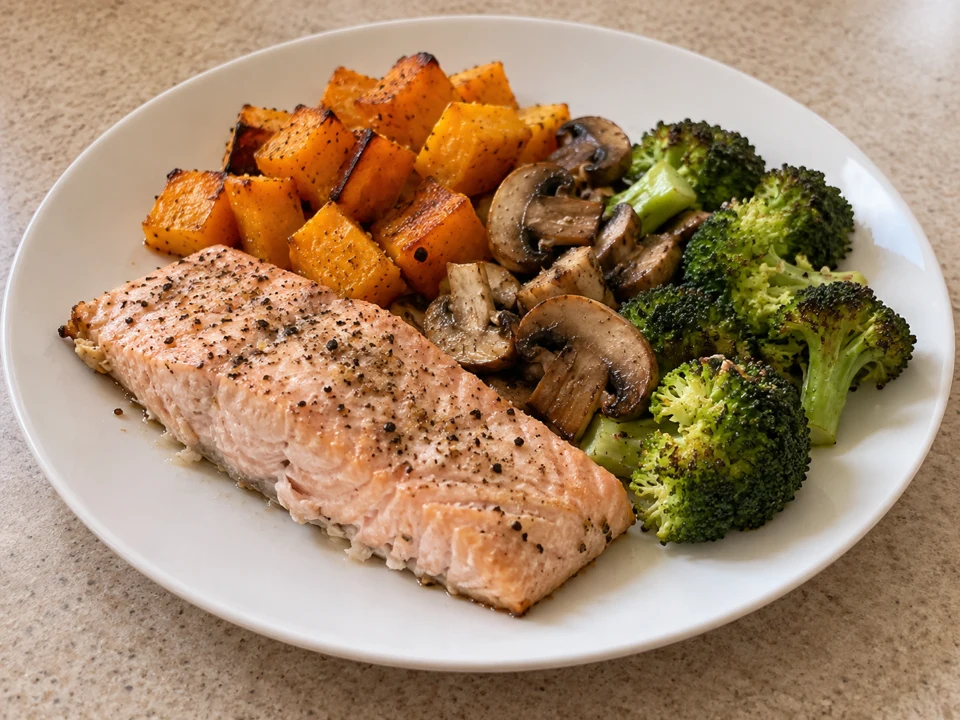
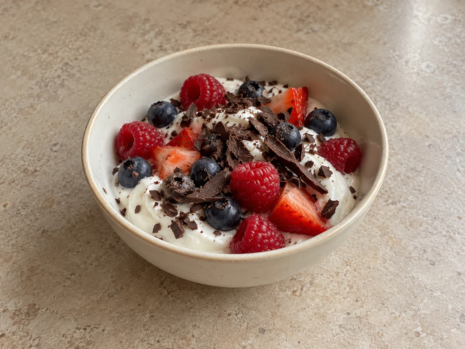

Откладываешь занятия на понедельник
Сохраняешь тренировки и покупаешь полезные продукты, но в рабочей суете трудно начать. Готовый план поможет выбрать первый шаг.
Марафон питания и движения
Вкусно есть. Двигаться с удовольствием. И находить время на себя.
За 14 дней попробуй ритм, который вписывается в обычную жизнь: еда уже придумана, занятия — дома, а пропущенный день не повод всё бросать.

Ксения Казанкова
Автор марафона · фитнес-тренерГотовое меню
на каждый день
4 зарядки
и 4 растяжки
1400 / 1600 / 1800
ккал на выбор
Полная стоимость
всей программы
Хочется наладить питание и добавить движение в свой день, но пока не хватает понятного плана. Начнём с того, что знакомо.
Сохраняешь тренировки и покупаешь полезные продукты, но в рабочей суете трудно начать. Готовый план поможет выбрать первый шаг.
К вечеру не остаётся сил выбирать рецепты. Здесь уже собраны блюда, порции и приготовление по шагам.
Хочется нравиться себе и заботиться о теле без строгих отчётов и ещё одной тяжёлой обязанности.
Есть немного места дома и телефон, на котором можно включить занятие. Для зарядок и растяжек этого достаточно.
Для чего всё это
Марафон помогает начать с простых действий: приготовить по готовому рецепту, включить занятие и выделить время для себя. Без требования сразу стать идеальной.
Меньше вечерних поисков рецептов. Вкусная еда из обычных продуктов и понятные порции на каждый день.
Зарядки и растяжки дома по готовому расписанию. Не нужно сначала собраться с духом и купить абонемент в зал.
Пропуск не обнуляет всё, что ты уже сделала. Можно вернуться к плану и двигаться дальше в своём темпе.
Не обещание изменить всю жизнь за две недели.
Возможность попробовать, как заботиться о себе с удовольствием.
Две недели питания и движения по готовому плану. Рецепты, зарядки и растяжки — в одном курсе, который ты проходишь самостоятельно.
По две зарядки на каждой неделе. Включай видео и занимайся дома в своём темпе.
По две растяжки в неделю. Чередуй их с зарядками и оставляй время для отдыха.
Три варианта: 1400, 1600 и 1800 ккал. В каждом рецепте — продукты, граммовки и шаги приготовления.
Поможет предварительно выбрать вариант питания. Дальше открывай материалы и следуй своему плану.
Ещё семь дней доступа к материалам, зарядкам и растяжкам после основной программы.
Марафон для тех, кто хочет начать с понятного плана еды и движения. Без домашних заданий, отчётов и личного сопровождения.
14 дней + неделя доступа в подарокЧто меняется в повседневности
Не нужно каждый вечер искать новый рецепт. Есть меню, понятные порции и список ингредиентов.
Вафли, крем-супы и другие осенние блюда. Забота о питании не обязана сводиться к скучной гречке.
План помогает выделить время на зарядку и растяжку. Две недели — возможность попробовать регулярность.
Твой план на две недели
Две зарядки и две растяжки в неделю. Каждый день — питание по выбранному меню.
На второй неделе сохраняем тот же ритм. Всего за марафон — 4 зарядки и 4 растяжки.





Не наказание. Забота.
«Кисуль, я хочу, чтобы ты перестала воспринимать заботу о себе как наказание. Вкусно поела, подвигалась, почувствовала себя хорошо — ну кайф же!»
Для меня спорт — не только про фигуру. Это про уверенность, про обещания себе, которые ты выполняешь. И про удовольствие жить в своём теле.
Не нужно становиться идеальной за две недели. Давай начнём с понятного: приготовим вкусную еду и найдём время подвигаться.
Твоя Ксюша КазанковаНачать проще, чем кажется
Для занятийТелефон с интернетом, удобная одежда, немного места дома, вода и полотенце. Коврик — при необходимости.
Для кухниПривычные продукты и обычная кухонная посуда. Что именно купить, подскажет меню.
Для себяНемного времени, которое ты разрешишь себе потратить на собственное самочувствие.

Кто придумал программу
Профессиональная спортсменка, мастер спорта и фитнес-тренер.
Я люблю сильное тело, женскую красоту и вкусную еду. И хочу, чтобы забота о себе вписывалась в твою жизнь, а не требовала поставить её на паузу.
В этом марафоне я собрала питание и движение в один понятный план. Тебе не нужно быть спортсменкой, чтобы выделить время на себя.

Живой опыт важнее обещаний
Этот блок появится с реальными отзывами. А пока можно познакомиться с Ксюшей и её подходом в открытом канале.
Мы не будем обещать тебе чужой результат. У каждой женщины свой ритм, исходная точка и ощущения от программы.
Открыть канал КсюшиДавай разберёмся
Самое важное о формате, питании и участии.
В программе — зарядки и растяжки, которые можно проходить в своём темпе. Не нужно пытаться повторить движение любой ценой. Если есть ограничения по здоровью, заранее обсуди занятия со своим специалистом.
Нет. Занятия можно проходить дома. Подготовь немного свободного места, удобную одежду, воду и при необходимости коврик.
Перед началом будет входная анкета для предварительного выбора меню на 1400, 1600 или 1800 ккал. Анкета не заменяет медицинскую или персональную диетологическую консультацию.
Для блюд готового меню уже указаны граммовки. Тебе остаётся следовать выбранному варианту и рецептам. При замене продуктов состав и калорийность могут измениться.
Нет. Это самостоятельная программа: без домашних заданий, проверки фотографий еды, обязательных отчётов и личного сопровождения куратором.
Вернись к плану, когда сможешь. Не нужно наказывать себя двойной нагрузкой. Условия и срок доступа к материалам будут указаны перед оплатой.
Нет. Изменения веса и самочувствия индивидуальны. Марафон даёт готовое меню и план движения, но не обещает определённое число килограммов или гарантированный результат.
Оплата будет через Telegram-бота, материалы — в Telegram. Когда запись откроется, бот объяснит порядок оплаты и получения доступа. Сейчас платёжная ссылка ещё не опубликована.
Точная дата старта пока не объявлена. Она появится вместе с условиями участия до открытия оплаты.
Две недели, которые можно посвятить себе
Не ждать идеального понедельника.
А выбрать понятный план и попробовать.
Легче, Кисуль!
2 000 ₽
Полная стоимость программы
14 дней программы + 7 дней дополнительного доступа к материалам.